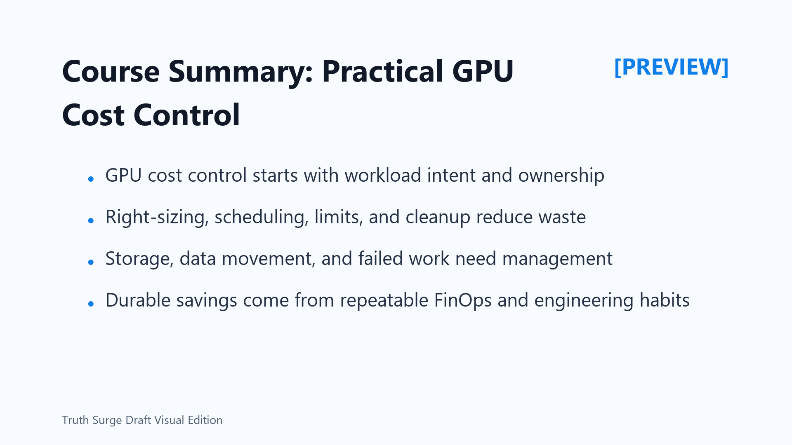

Course Summary: Practical GPU Cost Control
Connecting to LMS... Progress: in progress

Narration
Practical GPU cost control starts before a workload runs. Classify the workload, define its cost intent, assign ownership, and choose controls that match the value and risk of the work. Experiments, training jobs, batch evaluations, and production inference do not need identical policies.
Choose the smallest suitable resource, measure utilization, and scale deliberately. Use queues, schedules, shutdown policies, timeouts, retry limits, and cleanup automation to reduce idle time and runaway execution. Revisit right-sizing as models, data, and traffic change.
Manage the costs around the GPU as carefully as the GPU itself. Storage, checkpoints, logs, artifacts, snapshots, caches, data movement, failed jobs, and operational labor all affect effective cost. Hidden spend becomes easier to control when ownership and retention rules are explicit.
Finally, make cost visible and reviewable. Budgets, tags, quotas, guardrails, dashboards, anomaly alerts, forecasts, and regular reviews help teams connect engineering decisions to financial outcomes. Sustainable savings come from repeatable habits, not one-time cleanup. When every workload has intent, ownership, limits, and review, cloud GPU cost becomes manageable instead of mysterious.